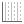

Gruppiertes Säulendiagramm mit Fehlerbalken und Datenbeschriftungen
GroupedColumn-ErrBar-Label
Zusammenfassung
Origin unterstützt gruppierte Säulendiagramme mit Indexdaten. Es werden mehrere Gruppenebenen unterstützt. Gruppierungsinformationen können in den Tabellen der Hilfsstrichsbeschriftungen zu den X- und Y-Achsen gezeigt werden.

Was Sie lernen werden
Dieses Kapitel zeigt Ihnen, wie Sie:
- gruppierte Säulendiagramme mit Fehlerbalken basierend auf Indexdaten zeichnen,
- Hilfsstrichsbeschriftungen, Farben, Lücken, Fehlerbalken und Datenbeschriftungen benutzerdefiniert anpassen,
- die Legende aktualisieren, um die Gruppierungsinformationen zu zeigen.
Schritte
- Wählen Sie im Menü Hilfe: Lernzentrum oder drücken Sie die Taste F11, um das Lernzentrum zu öffnen. Wählen Sie dann im linken Bedienfeld Diagrammbeispiel und die Kategorie "Säulen- und Balkendiagramme". Suchen Sie dieses Diagramm heraus und klicken Sie doppelt darauf, um dieses Beispiel zu öffnen.
- Wir erstellen jetzt aus dem Arbeitsblatt "Weekly Data" ein gruppiertes Säulendiagramm. Markieren Sie die Spalten D(Y2) und E(yErr) und wählen Sie Zeichnen: Kategorial: Gruppierte Säulendiagramme, Index im Menü.
- Klicken Sie im Dialog plot_gindexed auf
 in den "Gruppenspalten", um die Spalten B, C und F (in der Reihenfolge) zu der Gruppenliste hinzuzufügen. Klicken Sie auf OK.
in den "Gruppenspalten", um die Spalten B, C und F (in der Reihenfolge) zu der Gruppenliste hinzuzufügen. Klicken Sie auf OK.
Es wird ein gruppiertes Säulendiagramm mit Fehlerbalken erstellt. Die dreizeilige Tabelle der Hilfsstrichsbeschriftung zeigt die Gruppierungsinformationen an. Beachten Sie, dass ein Arbeitsblatt erstellt wird, das die verwendeten Daten enthält, mit denen dieses Diagramm erstellt wurde.

- Um die erste Zeile der Hilfsstrichsbeschriftung auszublenden, klicken Sie doppelt auf eine Beschriftung der Hilfsstriche in der 1. Zeile, z.B. EC2. Der Dialog Achsen wird geöffnet, wobei das Symbol Unten 3 im linken Bedienfeld ausgewählt ist. Deaktivieren Sie das Kontrollkästchen Zeigen und klicken Sie auf Anwenden.
- Wir möchten das Aussehen der Zeile für die Hilfsstrichsbeschriftung Unten 2 benutzerdefiniert anpassen. Wählen Sie das Symbol Unten 2 im linken Bedienfeld aus. Deaktivieren Sie auf der Registerkarte Tabelle das Kontrollkästchen Auto, deaktivieren Sie alle Kontrollkästchen für Rahmen und klicken Sie dann auf OK.
Jetzt werden nur zwei Zeilen der Hilfsstrichsbeschriftung angezeigt, jede mit einem anderen Layoutstil.

Weitere benutzerdefinierte Anpassungen
Mit den folgenden Schritten wird das Diagramm weiter benutzerdefiniert angepasst, so dass es dem Bild im Abschnitt Zusammenfassung entspricht.
- Klicken Sie auf die linke Y-Achse im Diagramm und in der Minisymbolleiste auf die Schaltfläche Gitternetzlinien zeigen . Wählen Sie in der Auswahlliste Haupt aus, um die Hauptgitternetzlinien zum Diagramm hinzuzufügen.
- Klicken Sie auf einen der Fehlerbalken im Diagramm und in der Minisymbolleiste auf die Schaltfläche Richtung
 . Wählen Sie in der Auswahlliste die Option Plus Y-Fehler, um nur die Y-Fehler im Plus-Bereich zu zeigen.
. Wählen Sie in der Auswahlliste die Option Plus Y-Fehler, um nur die Y-Fehler im Plus-Bereich zu zeigen.
- Klicken Sie auf eine der Säulen im Diagramm und in der Minisymbolleiste auf die Schaltfläche Datenbeschriftungen zeigen
 , um die Beschriftungen oberhalb der Fehlerbalken anzuzeigen.
, um die Beschriftungen oberhalb der Fehlerbalken anzuzeigen.
Klicken Sie auf eine der Beschriftungen und setzen Sie die Schriftgröße in der Minisymbolleiste auf "16".
 | Um die Beschriftungswerte zu formatieren, können Sie doppelt auf die Beschriftungen klicken, um die Registerkarte Beschriftungen des Dialogs Details Zeichnung zu öffnen. Wählen Sie in der Auswahlliste die Option Numerisches Anzeigeformat.
Um zum Beispiel eine einzelne Dezimalstelle für jede Beschriftung zu zeigen, geben Sie ",1" ein und klicken Sie dann auf OK. Weitere Informationen finden Sie unter Benutzerdefinierte numerische Formate.
|
- Klicken Sie zum Öffnen des Dialogs Details Zeichnung doppelt auf die Säulen. Um den Abstand zwischen den Wochen anzupassen, gehen Sie zur Registerkarte Abstände und setzen Sie den Abstand zwischen Teildatensätzen (%) auf 15 (Hinweis: Sie können die Eingabe in das Feld auch über die Tastatur machen).
- Wir verwenden die Daten in Spalte C, um das Füllmuster festzulegen und eine Farbgradientenfüllung zum Säulendiagramm hinzuzufügen. Gehen Sie zur Registerkarte Muster im Dialog Details Zeichnung und legen Sie Folgendes fest.
Um die Füllfarbe auf Weiß zu setzen, klicken Sie auf die Auswahlliste und dann auf die Registerkarte Einzeln. Klicken Sie dann auf die Zelle Weiß. Entsprechend klicken Sie für das Füllmuster auf die Auswahlliste, wählen Sie die Registerkarte Nach Punkten, klicken Sie auf die Schaltfläche Spaltenwerte verwenden und wählen Sie Col(C) aus der Liste. Die Richtung der Gradientenfüllung sollte Horizontal Mitte Außen sein.
- Zum Anpassen der Musterliste klicken Sie erneut auf die Auswahlliste Muster und dann auf das Stiftsymbol rechts von der Musterliste. Der Inkrementeditor wird geöffnet, mit dem Sie Ihre benutzerdefinierte Musterliste erstellen können. Ordnen Sie die oberen drei Einträge in Ihrer benutzerdefinierten Liste wie gezeigt neu, indem Sie an den nummerierten Schaltflächen links von der Mustergalerie ziehen.
- Um die Hintergrundfarbe der Diagrammseite zu ändern, wählen Sie das Symbol Graph im linken Bedienfeld des Dialogs Details Zeichnung. Wechseln Sie zur Registerkarte Anzeige und setzen die Farbe auf Hellgrau.
- Die Hintergrundfarbe des Layers ändern Sie in weiß, wenn Sie den Knoten Layer1 im linken Bedienfeld des Dialogs Details Zeichnung markieren. Wechseln Sie zur Registerkarte Hintergrund und setzen die Farbe auf Weiß. Klicken Sie auf OK, um den Dialog Details Zeichnung zu schließen.
- Um die Musterinformationen in der Legende zu zeigen, klicken Sie mit der rechten Maustaste auf die Legende und wählen Sie Legende: Legende rekonstruieren. So werden alle Kategorien gezeigt.
- Um die Legende horizontal anzuordnen, markieren Sie die Legende, drücken Sie die Strg-Taste und ziehen Sie eines der grünen Elemente an den Seiten der Legende entlang, bis die Legendeneinträge horizontal angeordnet sind.
Sie können auch mit der rechten Maustaste auf die Legende klicken und die Option Legende: Vertikal anordnen/Horizontal anordnen im Kontextmenü wählen, um die Legendenelemente neu anzuordnen.
- Ziehen Sie die Legende in eine geeignete Position. Markieren Sie den Titel der Y-Achse und drücken Sie Entfernen, um diesen zu löschen.

| Um die Ränder eines fertiggestellten Diagramms zu zentrieren und anzupassen, klicken Sie zur Aktivierung auf das Diagramm und wählen Sie dann Grafik: Layer an Seite anpassen. Geben Sie Ihren Rand ein und bestimmen Sie, ob Layerseitenverhältnis beibehalten aktiviert sein soll. Klicken Sie dann auf OK. |